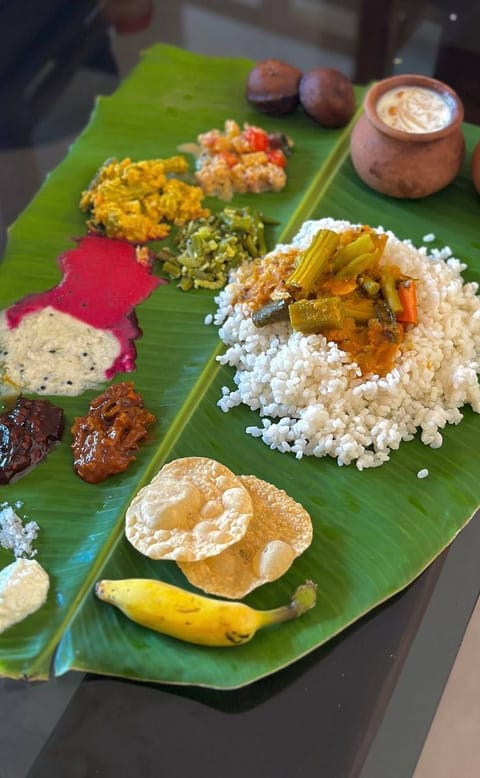
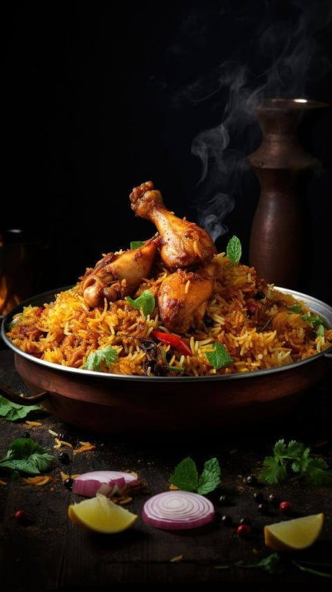
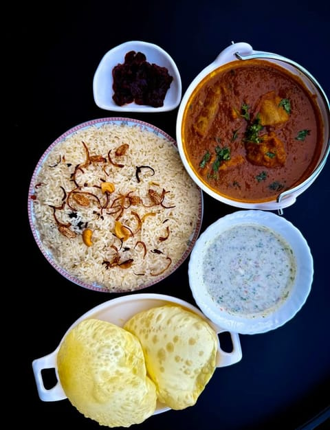
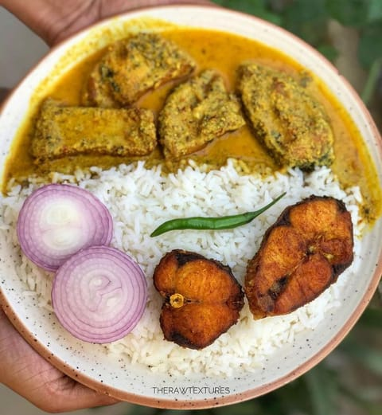
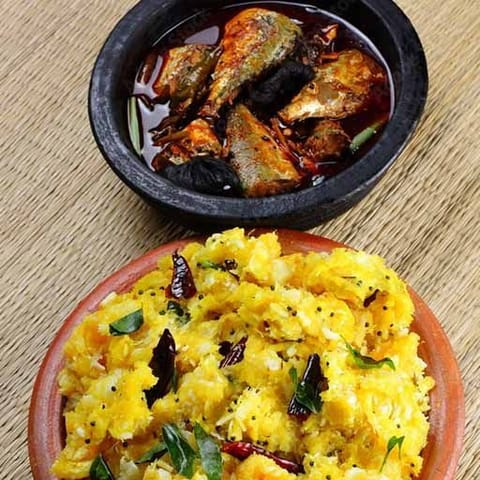

Kerala rice sadya
Red parboiled rice with a rotating spread of seasonal vegetable curries served on a plantain leaf.

Biriyani
Fragrant basmati rice layered with tender chicken and warm spices, slow cooked to bring together the flavours of a traditional Malabar kitchen.

Gee Rice Chicken Curry / Casunet curry
Fragrant ghee rice served with tender chicken simmered in a rich, gently spiced curry, a comforting Malabar classic made for a hearty meal.

Dhal, Rice, and Fish Curry
Warm rice served with creamy dal and a traditional Kerala fish curry, a simple homestyle meal full of comforting flavours.

Kappa and Fish Curry
Soft cassava served with a traditional Kerala fish curry, a rustic combination of earthy flavours and gentle spice.

Mutton Biriyani
Tender mutton layered with fragrant rice and warm spices, slow cooked to create a rich and comforting Malabar classic.